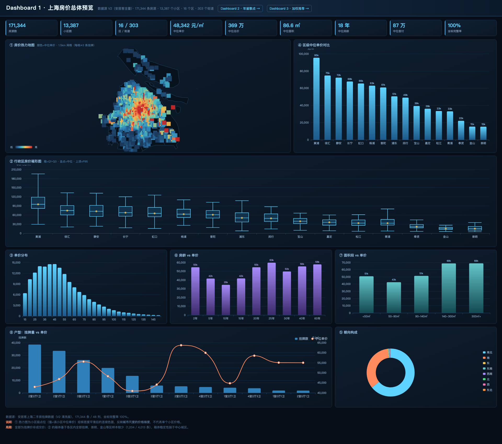
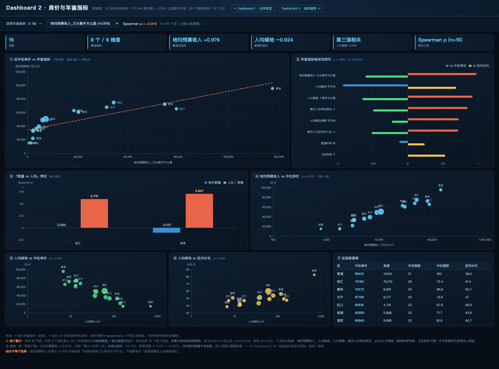
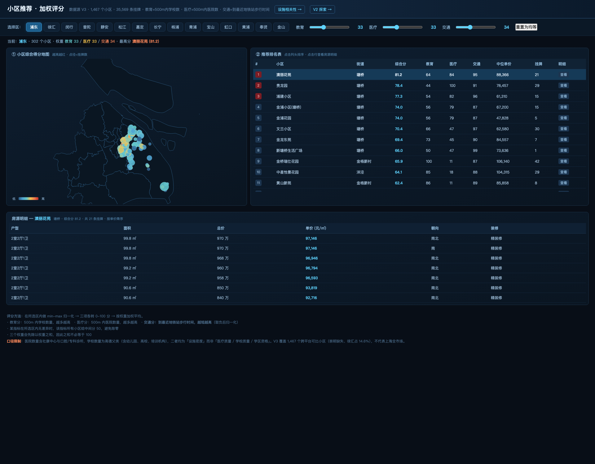

字段溯源 + 两种使用方式对照 + 三个 Dashboard 逐图步骤 + 数据验证证据 | 点击原型截图可放大（Esc 关闭）
你现在项目里的数据放在 project/dataset/ 下，共两个子文件夹：
| 文件夹 | 文件 | 规模 | 定位 |
|---|---|---|---|
v2/（我清洗的安居客全量） | 01_房源级.csv | 171,344 行 × 48 列 | 主表，D1 与 D2 的价格来源 |
02_小区级.csv | 13,543 行 × 55 列 | 小区聚合 + 年鉴指标 | |
03_区级.csv | 16 行 × 50 列 | 区级聚合 + 全部 40 个年鉴字段 | |
README.md / 字段字典.md | — | 我写的说明文档 | |
v3/（你的交集版） | 01_房源子集_旧表小区.csv | 35,569 行 × 54 列 | D3 房源明细（含 500m 设施） |
02小区总表_安居客重算.csv | 1,467 行 × 39 列 | D3 打分与排名（一行一个小区） | |
03_区表_年鉴口径_district.csv | 16 行 × 41 列 | 区级年鉴（备用） | |
tableau_ready/（预计算辅助表） | 5 张 CSV + README + 2 张图解 | 见 §2 | 方式 B 专用，省去 Tableau 里的复杂公式 |
v2/01_房源级.csv 用 wc -l 会数出 171,499 行，但 pandas 读出来是 171,344 行。差 155 行是因为 标题 字段里有 155 个嵌入换行符。以 171,344 行为准（Tableau 也会正确读成 171,344）。house_price_raw.csv 175,135 行 × 47 列 抓取时间 2024-07-15
│ （Downloads/archive (2) 与 (4)，md5 完全一致）
│
│ 我做的处理：① 筛选 ② 单位解析 ③ 派生新列
│ ① 物业类型 ∈ {普通住宅,别墅,公寓,商住楼}
│ ② 单价 ∈ [5000,300000]、面积 > 0
│ → 剔除 889 行（0.5%）
▼
v2/01_房源级.csv 171,344 行 × 48 列
│ ✅ 每一行都能在 raw 中找到对应（已实测）
│
│ 筛选：1471 → 1467 个小区（v2 ∩ 旧 final_tables_v2）
│ 每个小区的房源【全部保留，无二次抽样】
▼
v3/01_房源子集.csv 35,569 行 × 54 列 = v2 的 20.4%
✅ 严格子集（已实测）
| 来源 | 我的处理 | 字段数 | 含义 |
|---|---|---|---|
| 🟦 安居客原始抓取 | 直接搬运 | 15 | raw 里原样就有，我连列名都没改 |
| 🟦 安居客原始抓取 | 去单位 / 提标签 / 正则提取 | 15 | 值来自 raw，我只是把 "28445元/㎡" 变成 28445 |
| 🟨 我新派生 | — | 8 | 用已有字段算出来的新列 |
| 🟩 上一版 geocode 流程 | 直接搬运 | 3 | 经纬度与质量分级（与 v3 逐行一致，差 0 米） |
| 🟪 2024 上海统计年鉴 | 直接搬运 | 7 | 区级常量，每区 1 个值 |
| # | 字段 | 来源 | 我的处理 | 非空率 | 取值 |
|---|---|---|---|---|---|
| 1 | 区 | 🟦 安居客原始抓取 | 直接搬运 | 100.0% | 16 个取值 |
| 2 | 街道 | 🟦 安居客原始抓取 | 直接搬运 | 100.0% | 303 个取值 |
| 3 | 小区 | 🟦 安居客原始抓取 | 直接搬运 | 100.0% | 13387 个取值 |
| 4 | 区域 | 🟨 我新派生 | 我派生的新列 | 100.0% | 2 个取值 |
| 5 | 地址 | 🟦 安居客原始抓取 | 直接搬运 | 100.0% | 12949 个取值 |
| 6 | 价格_万元 | 🟦 安居客原始抓取 | 去单位 / 提标签 / 正则提取 | 100.0% | 20 ~ 5.1e+04 |
| 7 | 面积_平米 | 🟦 安居客原始抓取 | 去单位 / 提标签 / 正则提取 | 100.0% | 8 ~ 1947 |
| 8 | 单价_元每平 | 🟦 安居客原始抓取 | 去单位 / 提标签 / 正则提取 | 100.0% | 5000 ~ 2.996e+05 |
| 9 | 首付_万 | 🟦 安居客原始抓取 | 去单位 / 提标签 / 正则提取 | 100.0% | 0 ~ 1.02e+04 |
| 10 | 月供_元 | 🟦 安居客原始抓取 | 去单位 / 提标签 / 正则提取 | 100.0% | 0 ~ 1.832e+06 |
| 11 | 居室数 | 🟦 安居客原始抓取 | 直接搬运 | 100.0% | 1 ~ 15 |
| 12 | 厅堂数 | 🟦 安居客原始抓取 | 直接搬运 | 100.0% | 0 ~ 12 |
| 13 | 卫生间数 | 🟦 安居客原始抓取 | 直接搬运 | 100.0% | 0 ~ 18 |
| 14 | 户型 | 🟨 我新派生 | 我派生的新列 | 100.0% | 309 个取值 |
| 15 | 朝向 | 🟦 安居客原始抓取 | 直接搬运 | 100.0% | 11 个取值 |
| 16 | 装修 | 🟦 安居客原始抓取 | 直接搬运 | 100.0% | 6 个取值 |
| 17 | 楼层层级 | 🟨 我新派生 | 我派生的新列 | 88.5% | 3 个取值 |
| 18 | 总层数 | 🟨 我新派生 | 我派生的新列 | 99.5% | 1 ~ 118 |
| 19 | 建造年份 | 🟦 安居客原始抓取 | 去单位 / 提标签 / 正则提取 | 95.5% | 1901 ~ 2024 |
| 20 | 房龄 | 🟨 我新派生 | 我派生的新列 | 95.5% | 0 ~ 102 |
| 21 | 房龄段 | 🟨 我新派生 | 我派生的新列 | 95.5% | 5 个取值 |
| 22 | 面积段 | 🟨 我新派生 | 我派生的新列 | 100.0% | 5 个取值 |
| 23 | 物业类型 | 🟦 安居客原始抓取 | 直接搬运 | 100.0% | 4 个取值 |
| 24 | 产权性质 | 🟦 安居客原始抓取 | 直接搬运 | 100.0% | 7 个取值 |
| 25 | 产权年限 | 🟦 安居客原始抓取 | 直接搬运 | 100.0% | 4 个取值 |
| 26 | 房本年限 | 🟦 安居客原始抓取 | 直接搬运 | 100.0% | 3 个取值 |
| 27 | 有电梯 | 🟦 安居客原始抓取 | 去单位 / 提标签 / 正则提取 | 100.0% | 2 个取值 |
| 28 | 近地铁 | 🟦 安居客原始抓取 | 去单位 / 提标签 / 正则提取 | 100.0% | 2 个取值 |
| 29 | 车位充足 | 🟦 安居客原始抓取 | 去单位 / 提标签 / 正则提取 | 100.0% | 2 个取值 |
| 30 | 户型方正 | 🟦 安居客原始抓取 | 去单位 / 提标签 / 正则提取 | 100.0% | 2 个取值 |
| 31 | 多人关注 | 🟦 安居客原始抓取 | 去单位 / 提标签 / 正则提取 | 100.0% | 2 个取值 |
| 32 | 小区均价_元每平 | 🟦 安居客原始抓取 | 去单位 / 提标签 / 正则提取 | 99.9% | 6063 ~ 3.463e+05 |
| 33 | 小区户数_户 | 🟦 安居客原始抓取 | 去单位 / 提标签 / 正则提取 | 98.8% | 1 ~ 1.434e+04 |
| 34 | 物业费用_元每平月 | 🟦 安居客原始抓取 | 去单位 / 提标签 / 正则提取 | 95.2% | 0.08 ~ 22 |
| 35 | 绿化率_百分比 | 🟦 安居客原始抓取 | 去单位 / 提标签 / 正则提取 | 98.4% | 10 ~ 85 |
| 36 | 经度 | 🟩 上一版 geocode 流程 | 直接搬运 | 100.0% | 120.9 ~ 122 |
| 37 | 纬度 | 🟩 上一版 geocode 流程 | 直接搬运 | 100.0% | 30.71 ~ 31.83 |
| 38 | 坐标质量 | 🟩 上一版 geocode 流程 | 直接搬运 | 100.0% | 5 个取值 |
| 39 | 到市中心距离_公里 | 🟨 我新派生 | 我派生的新列 | 100.0% | 0.25 ~ 70.47 |
| 40 | 人口密度_人每平方公里 | 🟪 2024 上海统计年鉴 | 直接搬运 | 100.0% | 501 ~ 2.896e+04 |
| 41 | 地均预算收入_万元每平方公里 | 🟪 2024 上海统计年鉴 | 直接搬运 | 100.0% | 797.2 ~ 1.463e+05 |
| 42 | 人均绿地_平方米 | 🟪 2024 上海统计年鉴 | 直接搬运 | 100.0% | 6.7 ~ 697.8 |
| 43 | 老龄化率_百分比 | 🟪 2024 上海统计年鉴 | 直接搬运 | 100.0% | 31.4 ~ 45.3 |
| 44 | 外来人口占比_百分比 | 🟪 2024 上海统计年鉴 | 直接搬运 | 100.0% | 21 ~ 55.3 |
| 45 | 每万人卫生技术人员_人 | 🟪 2024 上海统计年鉴 | 直接搬运 | 100.0% | 49 ~ 620 |
| 46 | 每万人中学在校生_人 | 🟪 2024 上海统计年鉴 | 直接搬运 | 100.0% | 246 ~ 584 |
| 47 | 标题 | 🟦 安居客原始抓取 | 直接搬运 | 100.0% | 155903 个取值 |
| 48 | 标题链接 | 🟦 安居客原始抓取 | 直接搬运 | 100.0% | 162670 个取值 |
| 字段 | 我的算法 | 验证结果 |
|---|---|---|
区域 | 按区名映射：黄浦/徐汇/长宁/静安/普陀/虹口/杨浦 → 中心城区，其余 → 郊区 | ✅ 每个区只有 1 个值（16 区均已核对） |
户型 | 拼接 居室数 + 厅堂数 + 卫生间数 → 3室2厅1卫 | ✅ 与拼接结果一致率 100.00% |
楼层层级 | 拆分 raw 的 楼层位置：中层(共11层) → 中层 | ✅ 88.5% 可解析（raw 里 共X层 格式没有层级信息） |
总层数 | 拆分 raw 的 楼层位置：中层(共11层) → 11 | ✅ 99.5% 可解析 |
房龄 | 2024 − 建造年份 | ✅ 两者都非空的 163,666 行，一致率 100.00% |
房龄段 | 按房龄分箱：0-5 / 6-10 / 11-20 / 21-30 / 30年+ | ✅ 分箱逻辑可复核 |
面积段 | 按面积分箱：<50 / 50-90 / 90-140 / 140-300 / 300㎡+ | ✅ 分箱逻辑可复核 |
到市中心距离_公里 | 等距圆柱近似：√((经度−121.4737)×95)² + ((纬度−31.2304)×111)² | ✅ 与 Haversine 大圆距离中位差 0.02 km、最大 0.13 km |
首付_万 / 月供_元 与价格高度共线，不能和价格一起放进模型<br><br>· 首付_万 = 价格 × 20% 或 30%（两档），与 价格_万元 的 Pearson ρ = 0.947<br>· 月供_元 与 价格_万元 的 Pearson ρ = 0.997（几乎是价格的单调变换）<br>· 而且 20%/30% 的档位完全由区决定（中心城区=20%，外围=30%），所以「首付比例」本质上是个地理标记，不是购房者行为<br><br>它们可以用于展示（「中位首付 87 万」对购房者比「中位总价 369 万」直观），但不能当独立解释变量。到市中心距离_公里 与上面相反 —— 可以用<br><br>判断原则：派生自「自变量」的字段可以用；派生自「因变量」的字段不能用。<br>· 到市中心距离 派生自 坐标（解释房价的输入）→ ✅ 合法空间变量，与单价 ρ = −0.705<br>· 首付 派生自 价格（我们想解释的结果）→ ❌ 等于「用价格解释价格」<br><br>注意：到市中心距离 是 (经度, 纬度) 的确定性函数，三者不要同时放进一个模型。同样的三个 Dashboard，有两条技术路线。两条都能做出来，选一条即可，不要混着做。
| 方式 A · 用 v2/ + v3/ | 方式 B · 用 tableau_ready/ | |
|---|---|---|
| 数据源 | 只用 v2/ 与 v3/ 里的表 | 额外用 tableau_ready/ 的 5 张预计算表 |
| Tableau 里的工作量 | 大 —— 网格、分位、相关系数、区内分化都要自己写计算字段 | 小 —— 大部分图「连表 + 拖字段」就能出 |
| 公式复杂度 | 需要写 LOD 表达式、WINDOW_PERCENTILE 等 | 基本不用写复杂公式 |
| 数值与原型的一致性 | 会有小差异（Pearson vs Spearman、箱形图须线定义） | 完全一致（数值已预先算好） |
| 可解释性 / 答辩 | ✅ 能讲清每一步怎么算的 | ⚠️ 需要额外解释「这些表怎么来的」 |
| 适合 | 想让老师看到你自己动手算 | 想快速出可视化、把时间花在设计上 |
| Dashboard | 图 | 方式 A（原始表） | 方式 B（预计算表） |
|---|---|---|---|
| D1 | ① 热力地图 | 建 网格经度/纬度 计算字段（含余弦修正） | 连 05_网格热力.csv 直接画 |
| D1 | ② 箱形图 | 用 Tableau 内置盒须图，或 WINDOW_PERCENTILE 自建 | 连 06_箱形图分位.csv 画甘特条 |
| D1 | ③ 单价分布 | 右键建数据桶（5000） | 同 A（这个本来就简单） |
| D1 | ④ 区级对比 | 直接拖字段 | 同 A |
| D1 | ⑤ 朝向构成 | 直接拖字段 | 同 A |
| D1 | ⑥ 房龄 vs 单价 | 直接拖字段 + 手动排序 | 同 A |
| D1 | ⑦ 面积段 vs 单价 | 直接拖字段 + 手动排序 | 同 A |
| D1 | ⑧ 户型双轴 | 直接拖字段 | 同 A |
| D2 | ① 可切换散点 | 建参数 + CASE 计算字段 | 同 A（参数还是要在 Tableau 里建） |
| D2 | ② 相关性排行 | WINDOW_CORR（Pearson）或透视表 | 连 04_相关系数表.csv |
| D2 | ③ 数量 vs 人均 | 同上 | 连 04_相关系数表.csv |
| D2 | ④ 地均预算收入散点 | 直接拖字段 | 同 A |
| D2 | ⑤ 人均绿地散点 | 直接拖字段 | 同 A |
| D2 | ⑥ 人均绿地 vs 区内分化 | 在房源级上算 PERCENTILE | 连 07_区内分化.csv |
| D3 | 全部 | 用 v3/02小区总表（列名是 Latitude/Longitude） | 连 08_D3小区级_打分用.csv（列名已标准化） |
| 文件 | 规模 | 用于 | 省掉的工作 |
|---|---|---|---|
04_相关系数表.csv | 8 × 7 | D2 ②③ | Tableau 算不了 Spearman（内置是 Pearson） |
05_网格热力.csv | 1,055 × 5 | D1 ① | 网格计算字段 + 经纬度余弦修正 |
06_箱形图分位.csv | 16 × 13 | D1 ② | WINDOW_PERCENTILE + 甘特条长度计算 |
07_区内分化.csv | 16 × 7 | D2 ⑥ | 在 17 万行房源级上算 IQR 再聚合 |
08_D3小区级_打分用.csv | 1,467 × 21 | D3 全部 | 列名标准化（Longitude→经度） |
04 / 06 / 07 是区级（16 行），与房源级关联时必须用「关系（Relationship）」而不是「联接（Join）」；05 是网格级、08 是小区级，都独立使用。数据源：v2/01_房源级.csv（171,344 × 48）· 共 8 个组件

1. 数据源连 tableau_ready/05_网格热力.csv（1,055 行，已聚合） 2. 列：[网格经度] → 右键设为「维度 + 连续」（绿色） 3. 行：[网格纬度] → 同样设为「维度 + 连续」 4. 标记类型：方形 5. 颜色：[中位单价] 6. 大小：拉到最大 7. 地图 → 地图层 → 背景地图 = 无
[网格经度] = ROUND([经度] / 0.015753) * 0.015753 [网格纬度] = ROUND([纬度] / 0.013562) * 0.013562 筛选器：COUNT([单价_元每平]) >= 3
这两个数怎么来的：上海纬度 31.2°N 上，1° 经度 ≈ 95.2 km、1° 纬度 ≈ 110.6 km。要 1.5 km 的方格：经度步长 = 1.5/95.2 = 0.015753，纬度步长 = 1.5/110.6 = 0.013562。
MEDIAN 不是 SUM —— 一格内可能几百条挂牌，求和就变成「挂牌量图」了问题：上海单价是强右偏分布 —— 93.6% 的样本落在 5 千~10 万，而 20 万以上只占 0.2%。在线性色阶（5,000 ~ 300,000）下：
| 分位 | 单价 | 落在色阶的位置 |
|---|---|---|
| P10 | 22,892 | 6.1% |
| P20 | 30,231 | 8.6% |
| P50（中位） | 48,342 | 14.7% |
| P80 | 72,666 | 22.9% |
| P90 | 89,405 | 28.6% |
P10~P50 这 40% 的样本，只占了色阶的前 15% —— 中位数看起来和最低档几乎没区别。但中位数 4.8 万/㎡ 对普通购房者已经很高了，不该被画成「接近最低」。
建一个计算字段把高端截断（以网格表 05_网格热力.csv 为例）：
[单价_封顶] IF [中位单价] > 120000 THEN 120000 ELSE [中位单价] END
[单价_封顶][中位单价]，读者看到的数值不失真| 封顶值 | 中位数落点 | 被封顶的样本占比 |
|---|---|---|
| 90,000 | 51% | 14.8% |
| 120,000（推荐） | 38% | 2.9% |
| 150,000 | 30% | 1.0% |
右键颜色图例 → 编辑颜色 → 选一个发散色板（如「红色-蓝色发散」） → 点「高级」→「中心」填 55000
这样 5.5 万成为颜色的分界点：低于它向蓝端铺开，高于它向红端铺开。
注意：发散色板的语义是「高于/低于某个基准」，不是「越贵越红」，报告里要说明这个基准是什么。
按分位数分成 5 档，每档样本量相等（各 20%）：
[价格档位] IF MEDIAN([中位单价]) < 30231 THEN '1 低（<3.0万）' ELSEIF MEDIAN([中位单价]) < 42487 THEN '2 较低（3.0-4.2万）' ELSEIF MEDIAN([中位单价]) < 54526 THEN '3 中（4.2-5.5万）' ELSEIF MEDIAN([中位单价]) < 72666 THEN '4 较高（5.5-7.3万）' ELSE '5 高（>7.3万）' END
颜色绑 [价格档位]，用顺序色板（浅黄 → 深红）。
优点：最后一档从「0.2% 的样本」变成「20% 的样本」，颜色的面积和样本量匹配。
1. 数据源连 tableau_ready/06_箱形图分位.csv（16 行） 2. 列：[区]（按 P50 降序） 3. 行：[箱体下沿] 4. 标记：甘特条形图 5. 大小：[箱体高度] 6. 再叠一层细甘特条画上须/下须（用 [下须长度] / [上须长度]）
列：区（排序：按 MEDIAN([单价_元每平]) 降序） 行：单价_元每平 分析 → 盒须图 → 拖到画布
1. 右键 [单价_元每平] → 创建 → 数据桶 → 大小 5000 2. 列：[单价（桶）]（连续） 3. 行：COUNT([单价_元每平]) 4. 标记：条形
桶大小 5,000 对应原型的 28 档（15k ~ 155k）。
列：区（排序：按 MEDIAN([单价_元每平]) 降序） 行：MEDIAN([单价_元每平]) 标记：条形 + 显示标签
标记类型：饼图 颜色：朝向 角度：COUNT([单价_元每平]) 标签：类别 + 百分比 筛选器：朝向 → 保留 Top 8（按计数）
列：房龄段 行：MEDIAN([单价_元每平]) 标记：条形 + 标签 排序：右键 [房龄段] → 排序 → 手动 → 0-5年/6-10年/11-20年/21-30年/30年+
[房龄段序号] = CASE [房龄段] WHEN '0-5年' THEN 1 WHEN '6-10年' THEN 2 … END，然后 列=房龄段序号（连续）+ 标签=房龄段。列：面积段（手动排序：<50㎡ / 50-90㎡ / 90-140㎡ / 140-300㎡ / 300㎡+） 行：MEDIAN([单价_元每平]) 标记：条形 + 标签
1. 列：户型（筛选 Top 12，按计数） 2. 行：COUNT([单价_元每平]) ← 第 1 个 3. 行：MEDIAN([单价_元每平]) ← 第 2 个 4. 右键第 2 个行胶囊 → 双轴 5. 右键右轴 → 同步轴（取消勾选！） 6. 第 1 个标记改「条形」，第 2 个改「线」
数据源：v2/03_区级.csv（16 行 × 50 列，含全部 40 个年鉴字段）· 共 7 个组件

| 指标字段名 | 维度 | ρ vs 房价 | 稳健 |
|---|---|---|---|
地均预算收入_万元每平方公里 | 经济财政 | +0.976 | ✅ |
人均绿地_平方米 | 环境 | −0.924 | ✅ |
人口密度_人每平方公里 | 人口 | +0.918 | ✅ |
每万人中学在校生_人 | 教育 · 人均 | +0.847 | ✅ |
人均居住房屋_平方米 | 住房供给 | +0.721 | — |
每万人卫生技术人员_人 | 医疗 · 人均 | +0.715 | — |
普通中学_所 | 教育 · 数量 | −0.121 | — |
卫生机构_个 | 医疗 · 数量 | +0.000 | — |
Step 1 · 建参数
参数名：[选择指标] 数据类型：字符串 允许的值：列表
填入 8 个指标名
Step 2 · 建计算字段
[指标值] = CASE [选择指标]
WHEN '地均预算收入' THEN [地均预算收入_万元每平方公里]
WHEN '人均绿地' THEN [人均绿地_平方米]
… 共 8 行 …
END
Step 3 · 拖拽
列：[指标值]（连续）
行：[中位单价]
详细信息：区 标签：区 标记：圆
大小：8 + SQRT([房源数]) / 12
分析 → 趋势线 → 线性
Step 4 · 右键 [选择指标] 参数 → 显示参数控件
Step 5 · 地均预算收入 / 人均绿地 / 人口密度 建议用对数轴
右键 X 轴 → 编辑轴 → 刻度 = 对数
方式 B（推荐）：直接连 tableau_ready/04_相关系数表.csv
列：[相关系数_房价] 和 [相关系数_分化]（两个度量并排） 行：[指标名]（按 |相关系数_房价| 降序） 标记：条形（分组） 颜色：可用 [稳健] 列区分
方式 A：Tableau 内置 CORR() / WINDOW_CORR() 算的是 Pearson，不是 Spearman。两种做法：
| 做法 | 公式 / 步骤 | 说明 |
|---|---|---|
| 透视 + WINDOW_CORR | 数据源页面选中 8 个年鉴字段 → 右键 → 透视<br>行=[透视字段名称]，详细信息=区<br>文本=WINDOW_CORR([透视字段值],[中位单价])，表计算依据=区 | WINDOW_CORR 在每个「透视字段名称」分区内、跨 16 个区计算 |
| 预先算好导入 | 见 §6 的 Python 片段，跑出结果粘进 Tableau | 数值与原型完全一致 |
| 维度 | 绝对数量 ρ | 人均 / 密度 ρ |
|---|---|---|
| 医疗 | 卫生机构_个 +0.000 | 每万人卫生技术人员_人 +0.715 |
| 教育 | 普通中学_所 −0.121 | 每万人中学在校生_人 +0.847 |
这张图讲的是：数「医院个数」与房价零相关，但数「每万人医护人员」是强正相关 —— 说明绝对数量不含信息，除以人口后才显现关系。
方式 B：直接用 04_相关系数表.csv 的对应行，按「维度」和「类型」分组画分组条形图
方式 A：用 §4② 的透视表，加两个分组字段
[维度] = IF [透视字段名称] IN ('卫生机构_个','每万人卫生技术人员_人') THEN '医疗'
ELSEIF [透视字段名称] IN ('普通中学_所','每万人中学在校生_人') THEN '教育' END
[类型] = IF [透视字段名称] IN ('卫生机构_个','普通中学_所') THEN '绝对数量' ELSE '人均 / 密度' END
| 图 | 列（X） | 行（Y） | ρ | 数据源 |
|---|---|---|---|---|
| ④ 地均预算收入 | 地均预算收入_万元每平方公里（对数轴） | 中位单价 | +0.976 | 方式 A/B 同 |
| ⑤ 人均绿地 | 人均绿地_平方米（对数轴） | 中位单价 | −0.924 | 方式 A/B 同 |
| ⑥ 人均绿地 vs 区内分化 | 人均绿地_平方米（对数轴） | [区内分化] | +0.685 | 方式 B 用 07_区内分化.csv |
[区内分化] = (PERCENTILE([单价_元每平], 0.75) - PERCENTILE([单价_元每平], 0.25))
/ MEDIAN([单价_元每平]) * 100
行：区 文本：[区内分化] → 得到 16 行结果
行：区（按中位单价降序） 文本：中位单价 / 房源数 / 中位房龄 / 中位面积 / 区内分化 筛选器：度量名称 → 只保留这 5 个
数据源：方式 B 用 tableau_ready/08_D3小区级_打分用.csv（1,467 × 21）；方式 A 用 v3/02小区总表_安居客重算.csv（1,467 × 39）。房源明细用 v3/01_房源子集_旧表小区.csv。

| 用途 | 方式 A：v3/02小区总表 | 方式 B：08_D3小区级_打分用.csv |
|---|---|---|
| 经纬度 | Latitude / Longitude（英文） | 经度 / 纬度（已改名） |
| 单价 | 中位单价_元每平 | 中位单价（已改名） |
| 教育 / 医疗 / 交通 | 学校_500米 / 医院_500米 / 步行时间_分钟 | 同左 |
方式 A 先做两件事：① 右键 Latitude → 地理角色 → 纬度；Longitude → 经度。② 建议重命名成中文列名。方式 B 不用做，列名已标准化。
参数名：[教育权重] 数据类型：整数 当前值：33 允许的值：范围 最小值 0 最大值 100 步长 1 → 勾选「显示参数控件」→ 选「滑块」 同样建 [医疗权重] = 33、[交通权重] = 34
[教育分]
IF { FIXED [区]: MAX([学校_500米]) } = { FIXED [区]: MIN([学校_500米]) } THEN 50
ELSE
([学校_500米] - { FIXED [区]: MIN([学校_500米]) })
/ ({ FIXED [区]: MAX([学校_500米]) } - { FIXED [区]: MIN([学校_500米]) }) * 100
END
[医疗分]
IF { FIXED [区]: MAX([医院_500米]) } = { FIXED [区]: MIN([医院_500米]) } THEN 50
ELSE
([医院_500米] - { FIXED [区]: MIN([医院_500米]) })
/ ({ FIXED [区]: MAX([医院_500米]) } - { FIXED [区]: MIN([医院_500米]) }) * 100
END
[交通分]
/* 步行时间越短越好 → 分子用 MAX 减，方向反过来 */
IF { FIXED [区]: MAX([步行时间_分钟]) } = { FIXED [区]: MIN([步行时间_分钟]) } THEN 50
ELSE
({ FIXED [区]: MAX([步行时间_分钟]) } - [步行时间_分钟])
/ ({ FIXED [区]: MAX([步行时间_分钟]) } - { FIXED [区]: MIN([步行时间_分钟]) }) * 100
END
FIXED [区]，不是 FIXED [区],[小区]<br>后者是在小区内做归一化，而一个小区只有一行数据 → MAX = MIN → 所有分数都返回 50，地图全一个颜色。<br><br>2. 除零保护必须有 —— 若某区所有小区的学校数相同，MAX − MIN = 0，会返回 Inf 或 Null。<br><br>3. [交通分] 的分子要反过来 —— 用 MAX − 当前值，因为步行时间越短越好。[综合得分] ([教育分] * [教育权重] + [医疗分] * [医疗权重] + [交通分] * [交通权重]) / NULLIF([教育权重] + [医疗权重] + [交通权重], 0)
NULLIF(x, 0) 防止三个权重全为 0 时除零。权重会先除以权重之和，所以三个滑块不必凑成 100。
| 位置 | 设置 |
|---|---|
| 出图 | 双击 经度 + 纬度（方式 A 是 Latitude/Longitude） |
| 粒度 | 小区 → 拖到「标记 → 详细信息」 |
| 标记 | 圆 |
| 颜色 | [综合得分] → 顺序色 |
| 大小 | [挂牌数] |
| 筛选器 | 区 → 显示筛选器 → 改成单选 |
还原原型的「越高越红」色阶：右键 [综合得分] → 编辑颜色 → 自定义 6 档：#2a5c8a → #4fa3d1 → #63c6c9 → #f2c14e → #ef7a4a → #c62828
| 位置 | 设置 |
|---|---|
| 行 | 小区 |
| 文本 | [综合得分]、中位单价、挂牌数、[教育分]、[医疗分]、[交通分] |
| 排序 | 按 [综合得分] 降序 |
| 排名序号 | 新建 [排名] = INDEX()，放第一列 |
| 筛选器 | 区（与地图共用同一个筛选器，实现联动） |
| 位置 | 设置 |
|---|---|
| 数据源 | v3/01_房源子集_旧表小区.csv（35,569 行） |
| 列 | 面积 / 价格 / 单价 / 朝向 / 装修 |
| 筛选器 | 区（与主表联动） |
| 动作 | 仪表板 → 动作 → 添加动作 → 筛选器<br>源 = 得分地图 / 排名表<br>目标 = 房源明细<br>运行方式 = 选择<br>字段 = 小区 |
户型<br>v3/01_房源子集_旧表小区.csv 不含 户型 字段（那是后来才补到 v2 的）。两个选择：<br>· 选择 1（简单）：明细表不显示户型<br>· 选择 2（完整）：与 v2 关联取户型<br> 关联字段：区 + 街道 + 小区 + 面积 + 价格（五字段复合关联）<br> 必须带上 面积 + 价格，因为同一小区有多条房源以下每一项都是我在你的实际文件上跑出来的，不是估计值。如果有人质疑数据可靠性，这一节可以直接拿出来。
| 文件 | archive (2) md5 | archive (4) md5 | 结论 |
|---|---|---|---|
house_price_raw.csv | 7b9cd205…709d | 7b9cd205…709d | ✅ 完全一致 |
dataset.csv | 25f843ed…ea38 | 25f843ed…ea38 | ✅ 完全一致 |
| 检查项 | 结果 |
|---|---|
| v2 每一行能否在 raw 找到对应（按 区+街道+小区+面积+价格 多重集） | ✅ 171,344 / 171,344（100%） |
| 属性元组一致性（朝向/装修/楼层位置/产权性质/物业类型） | ✅ 171,344 / 171,344 |
| 区 / 街道 / 小区 / 楼层位置 取值是否 ⊆ raw | ✅ 无多出 |
| 行数差 889 的来源 | ✅ 全部有解释（物业类型 711 条 + 单价越界 159 条 + 其他） |
被剔除的 889 行长什么样（物业类型分布）：新里洋房 378 · 其他 169 · 普通住宅 158 · 老公房 93 · 暂无 35 · 平房 31 · 别墅 14 · 公寓 5 · 商住楼 1
| 检查项 | 结果 |
|---|---|
| v3 小区 ⊆ v2 小区 | ✅ 1,467 / 1,467 |
| 逐小区房源条数 | ✅ 1,467 / 1,467 完全一致 |
| v3 总条数 = 这些小区在 v2 的条数 | ✅ 35,569 = 35,569 |
| 属性多重集包含 | ✅ 无缺失 |
| 结论 | ✅ v3 = v2 按小区过滤，房源全部保留，无二次抽样 |
| 表 | 粒度 | 校验 |
|---|---|---|
v2/02_小区级.csv | 区 + 街道 + 小区（13,860） | ✅ 挂牌数 100% 一致 |
v2/03_区级.csv | 区（16） | ✅ 房源数、中位单价 100% 一致 |
v3/02小区总表.csv | 区 + 小区（1,467） | ✅ 挂牌数 100% 一致 |
tableau_ready/08_…csv | 区 + 小区（1,467） | ✅ 坐标与指标与 v3/02 一致率 100% |
v2/02_小区级.csv 用 区 + 街道 + 小区 = 13,860 行（同名小区跨街道算两个实体）<br>· v3/02小区总表.csv 用 区 + 小区 = 1,467 行<br>不要直接用 (区,小区) 跨表 join，会一对多。建议分别使用（V2 表画 V2 的图，V3 表画 V3 的图）。拿 v2 和 v3 共有的 1,467 个小区比对：经度差中位 0.000000°、最大 0.000000°、完全一致占比 100.0% —— 证明两边的坐标来自同一次 geocode，没有二次加工。
现象：拖 网格经度 到列后出现几百个列标题。解决：右键胶囊 → 连续（变绿色）。
现象：地图上一个孤零零的点。原因：架子上是 AVG(经度)，对整张表求平均。解决：把 小区 拖到「详细信息」。
现象：区级散点的气泡被房源数放大。解决：用关系（Relationship），或直接用 03_区级.csv 单表。
现象：户型的单价线被压成一条直线。解决：取消「同步轴」。
FIXED [区],[小区]现象：得分地图全一个颜色、每个小区都是 50 分。解决：必须是 FIXED [区]。
现象：排名表里同一个小区出现几十行。解决：换成 v3/02小区总表（1,467 行）。
Tableau 内置是 1.5×IQR，原型是 P5/P95。解决：接受差异并注明，或用 06_箱形图分位.csv。
Tableau 内置 CORR() 是 Pearson。解决：用 04_相关系数表.csv，或按 §8.1 自己算。
房龄段、面积段 默认按拼音排。解决：建数值排序字段。
解决：① 创建 .hyper 提取 ② 地图先加筛选器 ③ 用小区级表画地图。
import pandas as pd
d = pd.read_csv('v2/01_房源级.csv', low_memory=False)
Y = pd.read_csv('v2/03_区级.csv', low_memory=False)
KEEP = ['地均预算收入_万元每平方公里','人均绿地_平方米','人口密度_人每平方公里',
'每万人中学在校生_人','每万人卫生技术人员_人','人均居住房屋_平方米',
'卫生机构_个','普通中学_所']
g = d.groupby('区').agg(中位单价=('单价_元每平','median'),
p25=('单价_元每平', lambda s: s.quantile(.25)),
p75=('单价_元每平', lambda s: s.quantile(.75))).reset_index()
g['区内分化'] = (g['p75'] - g['p25']) / g['中位单价'] * 100
g = g.merge(Y[['区'] + KEEP], on='区')
out = []
for c in KEEP:
r = g[['中位单价', c]].dropna()
out.append({'指标': c, 'ρ_vs_房价': round(r['中位单价'].corr(r[c], method='spearman'), 3)})
print(pd.DataFrame(out).sort_values('ρ_vs_房价', key=abs, ascending=False))
实测输出：地均预算收入 0.976 · 人均绿地 −0.924 · 人口密度 0.918 · 每万人中学在校生 0.847 · 人均居住房屋 0.721 · 每万人卫生技术人员 0.715 · 普通中学_所 −0.121 · 卫生机构_个 0.000
import pandas as pd
d = pd.read_csv('v2/01_房源级.csv', low_memory=False)
g = d.groupby('区')['单价_元每平'].agg(
P25=lambda s: s.quantile(.25), P50='median',
P75=lambda s: s.quantile(.75), 房源数='size').reset_index()
g['区内分化'] = ((g['P75'] - g['P25']) / g['P50'] * 100).round(2)
g.to_csv('区内分化.csv', index=False, encoding='utf-8-sig')
实测输出（可直接对照验证）：崇明 82.67 · 浦东 59.99 · 青浦 56.22 · 松江 53.87 · 闵行 51.26 · 静安 50.72 · 奉贤 49.32 · 嘉定 49.17 · 金山 47.47 · 长宁 47.03 · 虹口 46.88 · 杨浦 43.77 · 宝山 43.37 · 徐汇 41.36 · 普陀 40.67 · 黄浦 38.62
import pandas as pd
d = pd.read_csv('v2/01_房源级.csv', low_memory=False)
b = d.groupby('区')['单价_元每平'].agg(
P05=lambda s: s.quantile(.05), P25=lambda s: s.quantile(.25), P50='median',
P75=lambda s: s.quantile(.75), P95=lambda s: s.quantile(.95), 样本量='size').reset_index()
b['箱体下沿'] = b['P25']
b['箱体高度'] = b['P75'] - b['P25']
b.to_csv('箱形图分位.csv', index=False, encoding='utf-8-sig')
文件 → 导出为打包工作簿（.twbx） ← 含提取数据，别人打开就能看 服务器 → Tableau Public → 保存 ← 拿到在线链接（公开挂牌数据，无隐私问题）
| 页 | 说明 |
|---|---|
| 数据 | 安居客上海二手房挂牌数据（抓取时间 2024-07-15），207 万→17.1 万条，坐标 100% 完整 |
| D1 | 网格 1.5km 聚合，经度按 31.2°N 余弦修正（0.015753° / 0.013562°）；热力图颜色为中位单价，非挂牌量 |
| D2 | 相关系数为 Spearman ρ（n=16）；经 Bonferroni 校正，|ρ| < 0.5 的指标不作为结论 |
| D3 | 区内 min-max 归一化 + 权重加权平均；三个权重先除以权重之和 |
作业要求单个 zip，内含一个 index.html 起始页，链接到小组报告、个人报告、README、在线 dashboard 链接。
| 页面 | 用哪个 | 为什么 |
|---|---|---|
| D1 总体预览 | 🟦 v2/01_房源级.csv | v2 覆盖完整（16 区全覆盖、13,387 小区），无选择性偏差。v3 只有 1,467 个小区且崇明为 0 |
| D2 年鉴散点 | 🟦 v2/03_区级.csv | 区级描述必须用无偏数据。v3 的中位单价与 v2 差 16.3%，是选择偏差，不能混用 |
| D3 加权推荐 | 🟧 v3/02小区总表 | 只有 v3 有 500m 设施数据（学校/医院/步行时间）。v2 完全没有，帮不上忙 |
Tableau构建指引.md 内容同源（同一份结构化内容渲染成两种格式）。dashboard/；预计算表在 tableau_ready/；清洗数据在 v2/。